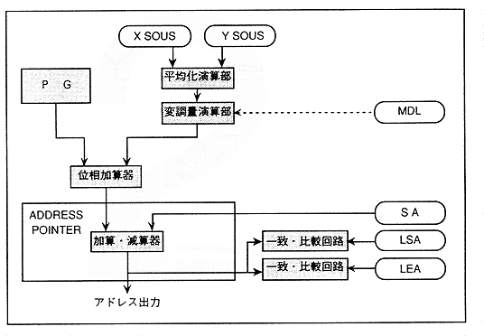
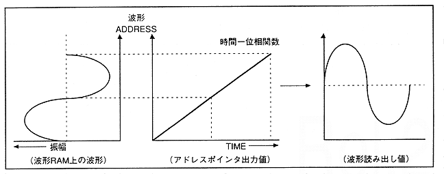

To output sound from the slot, write the waveform data for generating the slot in the waveform RAM. Furthermore, set the waveform readout address, loop start address, loop end address, sound pitch, sound level, and EG, and start sounding with KEY_ON.
∙ SCSP operates as a single large cycle of 22.68 [μsec] as a whole.
PG (Phase Generator) manages the waveform data read speed determined by the sound frequency setting value. Unless the sound frequency is changed, the PG generates a constant value every 1Fs cycle (22.68 [μsec] = 1 / 44.1KHz), performs cumulative addition every Fs cycle, and outputs it. As shown in Figure 4.19, it is added to various addresses with the address pointer, and the resulting value is output to the address bus as a waveform address, and the waveform data corresponding to the waveform address is read from the RAM.
Figure 4.19 Waveform address generation calculation unit

Figure 4.20 Waveform address generation / waveform data reading
